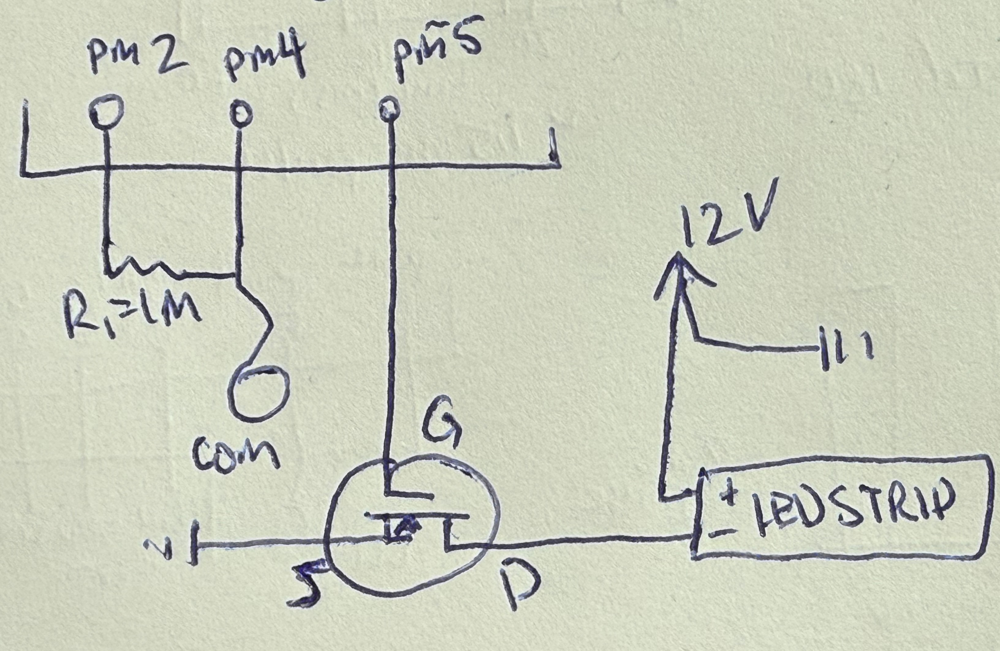
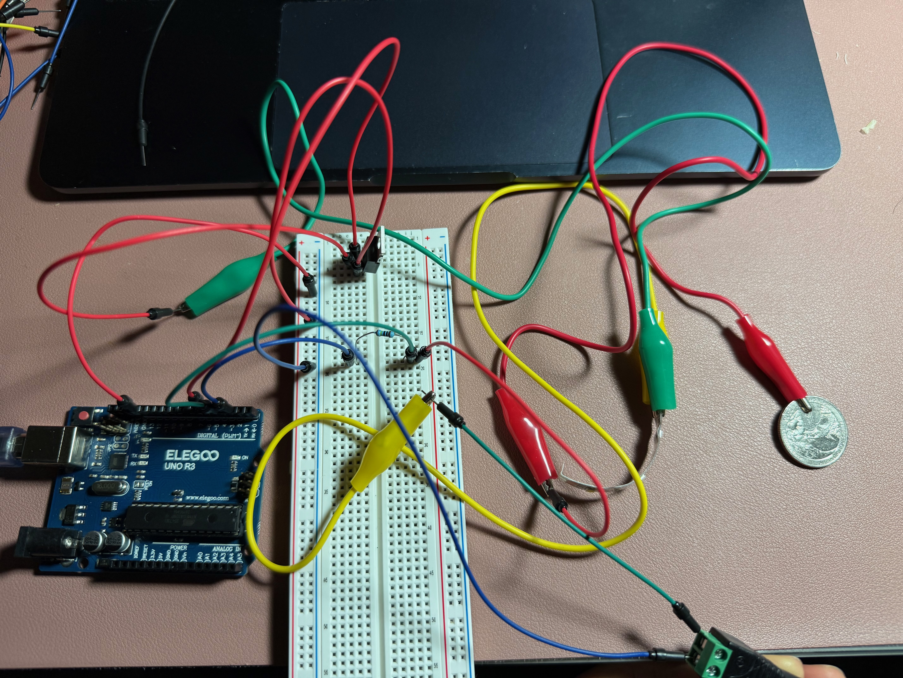
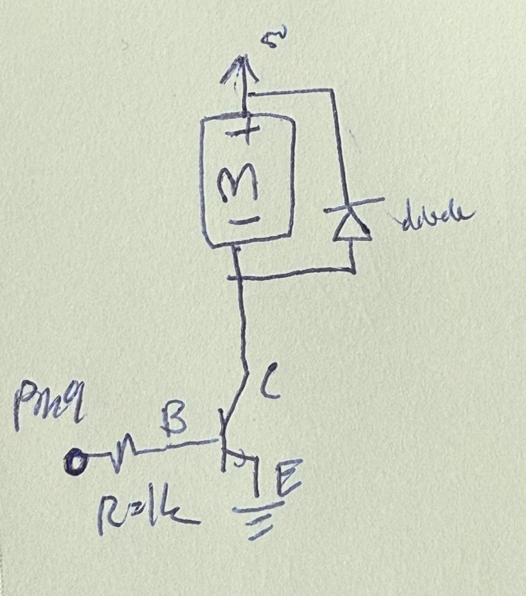
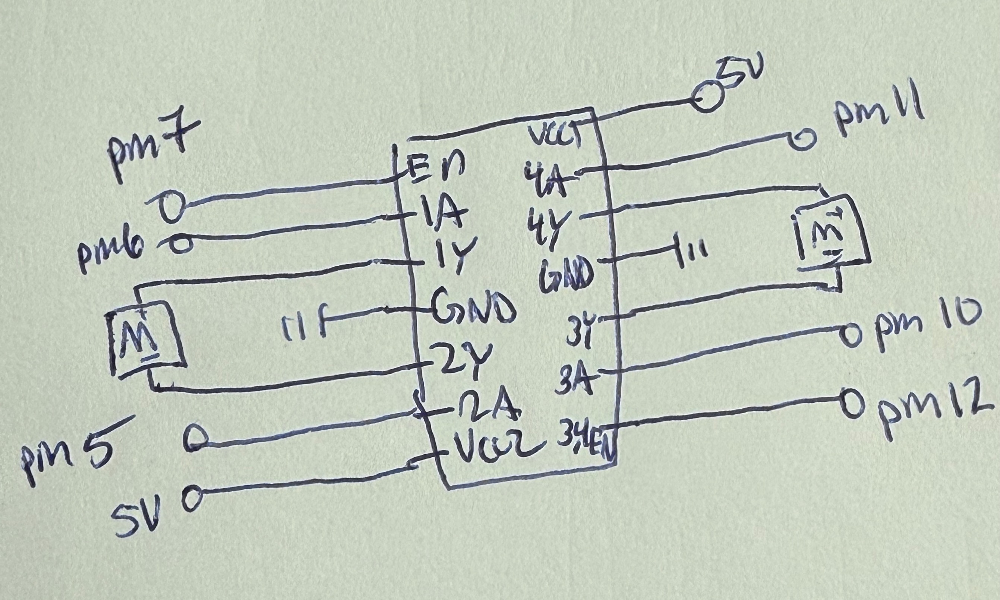

Image of Schematic

The schematic is composed of a coin (capacitor) with a resistor and an led strip with a transitor and a 12V source. The pin that sends (2) is connected to the capacitor/coin has a resistor of 1M so the current was low enough to detect a direct touch only and not when fingers were close to it. These are also connected to pin 4, which is the receiver for the capacitor sensor. The LED strip is connected to pin 5 for PWN signals, where the voltage may be 0V or 5V, 12V source for power, and is connected to ground. The current draw of the led strip (with three white led lights) will be around 0.012 A (VR = 12 - 3*3.3 = 2.1V, IR = 2.1V/180ohms = 12 mA.)
Image of Circuit

A 1M was used as the provided kit had the correct amount. A quarter was used as the capacitor.
Gif of Circuit

Answers to Questions
- N-moset transister: IRLZ44N. The max current between pin 2 and 3 with a Vgs of 10V is 47 A if continuous and at around room temp (25C), 33A at around 100C, and about 160A if it is pulsed.

-

const int en1 = 7;
const int motor1_ccw = 6;
const int motor1_cw = 5;
const int en3 = 7;
const int motor2_ccw = 11;
const int motor2_cw = 12;
void loop() {
digitalWrite(en1, HIGH);
digitalWrite(en3, HIGH);
//Forward
digitalWrite(motor1_cw, HIGH);
digitalWrite(motor1_ccw, LOW);
digitalWrite(motor2_cw, HIGH);
digitalWrite(motor2_ccw, LOW);
delay(1000)
// backward
digitalWrite(motor1_cw, LOW);
digitalWrite(motor1_ccw, HIGH);
digitalWrite(motor2_cw, LOW);
digitalWrite(motor2_ccw, HIGH);
delay(1000)
//one (motor2) going forward, other (motor1) stays backward
digitalWrite(motor2_cw, HIGH);
digitalWrite(motor2_ccw, LOW);
delay(1000)
// motor1 goes forward and then goes backward - other ones stays the same
digitalWrite(motor1_cw, HIGH);
digitalWrite(motor1_ccw, LOW);
delay(200)
digitalWrite(motor1_cw, LOW);
digitalWrite(motor1_ccw, HIGH);
} - No AI was used in completing this assignment.
Code
// include the capacitor sensor library
#include < CapacitiveSensor.h >
// create capcitive sensor with pins 2 (to send) and 4 (to receive)
CapacitiveSensor cs_s2_r4 = CapacitiveSensor(2,4);
// pin for led strip
const int ledPin = 5;
// value of sensor - will change later
long sensorValue = 0;
// around the lowest value read from capacitiveSensor / not touched
int sensorMin = 30
// around the highest value read from capacitiveSensor / when touched
int sensorMax = 900
// code that will one once once arduino is turned on
void setup() {
//initializing ledPin as an output, it is off and not outputting voltage
pinMode(ledPin, OUTPUT);
// turns off autocalibration
cs_s2_r4.set_CS_AutocaL_Millis(0xFFFFFFFF);
// Begin Serial communication to print values
Serial.begin(9600);
}
//code to run continuously after arduino is set up
void loop() {
// The start time of the reading in miliseconds
long start = millis();
// variable that gets the capacitive sensor value with 30 samples
sensorValue = cs_s2_r4.capacitiveSensor(30);
//Prints beginning of the sensor value statement
Serial.print("\t Sensor Value: ");
// print sensor output value
Serial.println(sensorValue);
//constraining the range of sensor values between the sensorMin and sensorMax (range of values from capacitiveSensor)
int sensVal = constrain(sensorValue, sensorMin, sensorMax);
//maps the value of the sensor to be between 0-255 (analog) from the sensorMin and sensorMax (range of values from capacitiveSensor)
int outVal = map(sensVal, sensorMin, sensorMax, 0, 255);
//Prints beginning of the mapped sensor value
Serial.print("\t Mapped Value: ");
// print mapped sensor output value
Serial.println(outVal);
// sets the value for led strip, ranging from 0 to 255
analogWrite(ledPin, outVal);
}